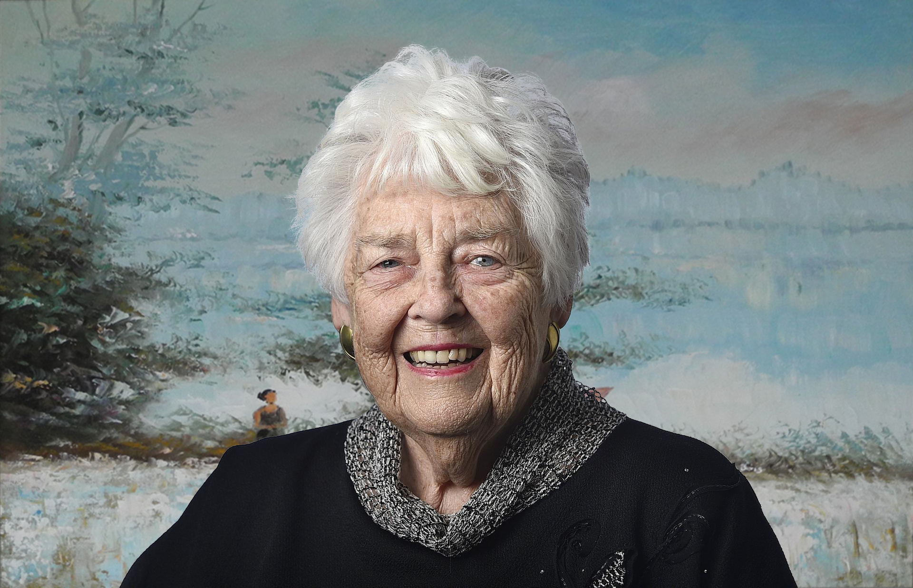

"I'm just a little artist who likes to paint..."
Thanks to the incredible generosity of Pat Yahn and her family, her endowments have made it possible for Behrend to showcase our pride by creating this Art Show for Penn State Behrend student artists.

This short animated biopic features only a fraction of the decades of beautiful artwork created by Patricia Yahn. Penn State Behrend wishes to honor her incredible contributions to our campus as well as the Erie community as a whole with this project - and bring life to her lively work.